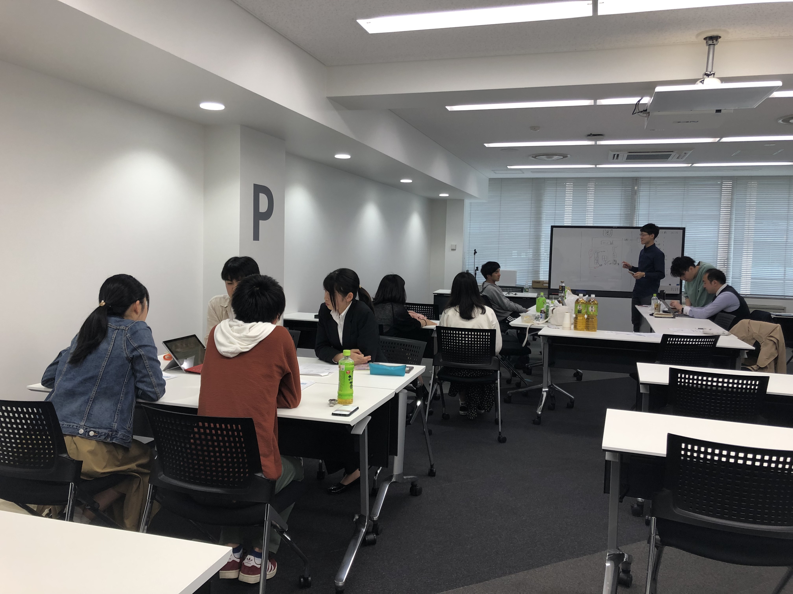
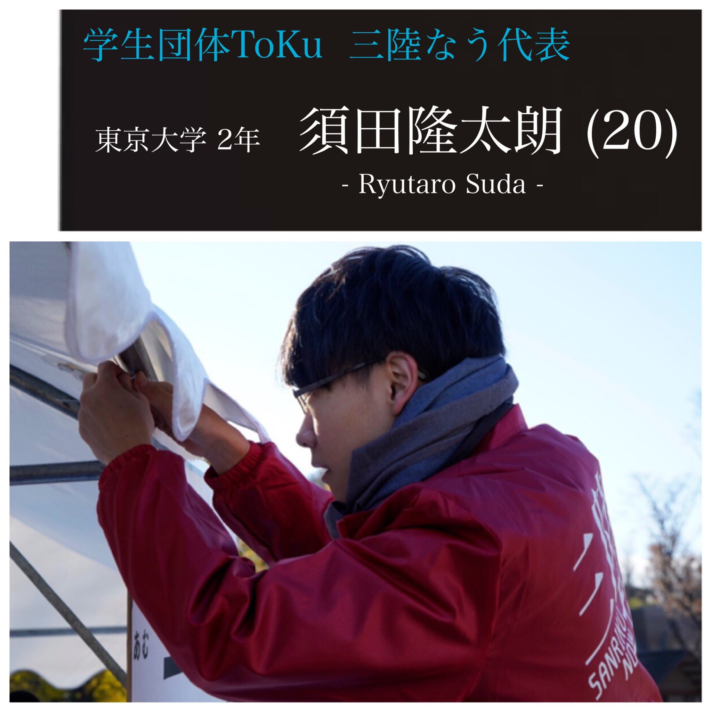
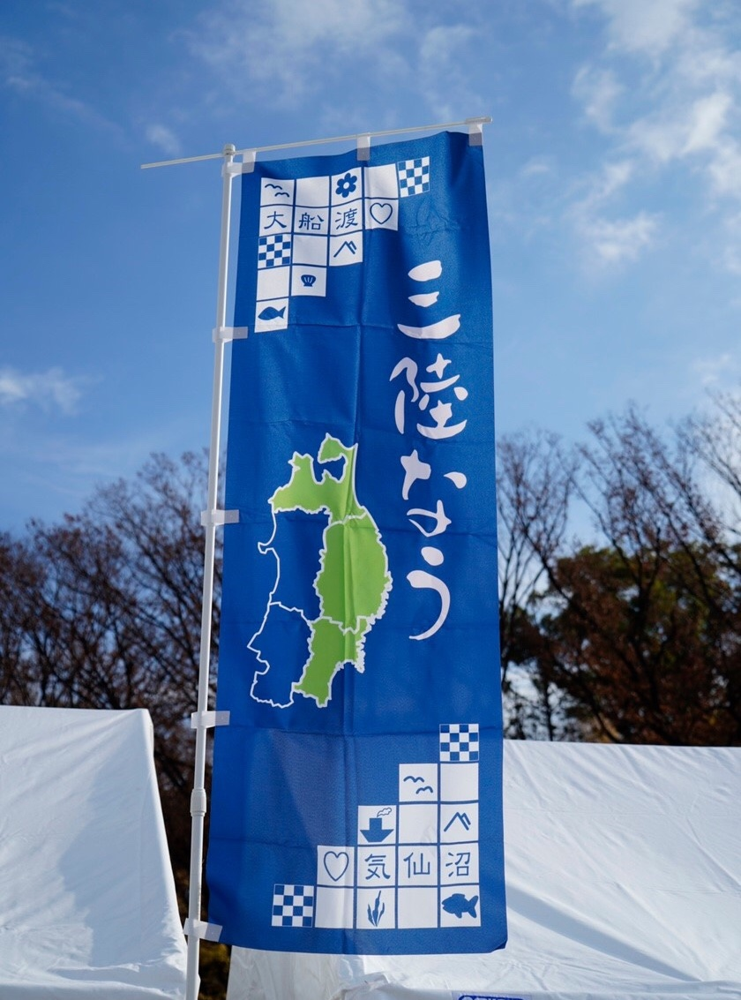

活 動 記 録
活 動 記 録
活動記録
ACTIVITY
4/21に定例会を行い、三陸なう2019の準備が本格的にスタートしました！

はじめに、実行委員長の須田からご挨拶です！
~~~~~~~~~~~~~~~~~~~~~~~~~~~~~~~~~~~~~~~~~~~~~
三陸なう2019実行委員長を務めさせて頂きます、
須田隆太朗と申します！
私にとって三陸は、
美味しい食べ物に舌鼓を打つ場所であり、
地元の方のおもてなし･温かさに感動する場所であり、
復興に向かって日進月歩で物事が変わる環境の中で
生き生きと暮らす人々からパワーを頂く場所です。
三陸の魅力をもっと多くの人に伝えたい、
三陸に興味を持って一度は訪れて欲しい、
という思いで今年も三陸なうを開催させて頂きます。
どうぞよろしくお願いいたします。
~~~~~~~~~~~~~~~~~~~~~~~~~~~~~~~~~~~~~~~~~~~~~


実行委員会幹部は以下のメンバーです!
| 代表:須田隆太朗 | |
| マルシェ：川面将輝 | 飲食：秋山遼詞 |
| ステージ：藤岡愛理 | 体験：中村優希 |
| 三陸なう2019概要（こちら） | |
|---|---|
| 日時 | 12/14-15 10:00-17:00 |
| 場所 | 上野恩賜公園 竹の台広場（噴水広場） |
| テーマ | 三歩踏み込む三陸 |
| コンテンツ | ①体験ブース ②飲食ブース(予定) |
| ③マルシェ ④ステージ | |
| 企画・運営 | 学生団体ToKu |
続々更新中!
keep updating...